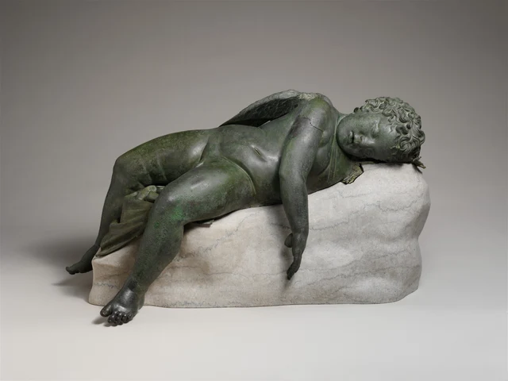
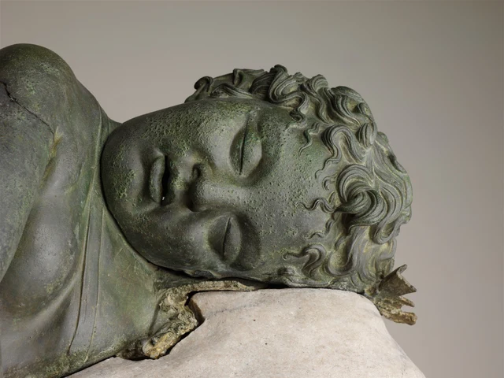
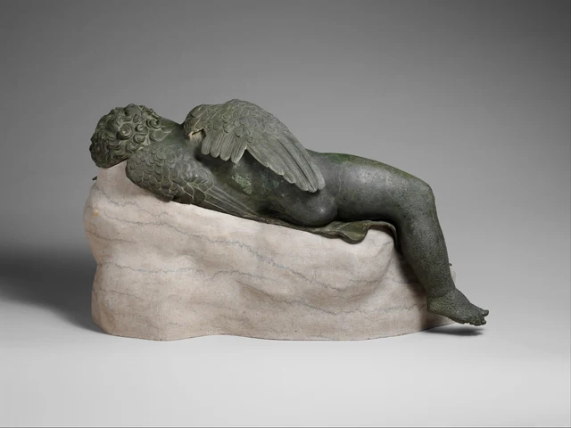

Sehen wir zuerst auf die herabhängende Hand.
Der Arm fällt von der Schulter schräg ab, führt vor der Brust vorbei und über den Rand der Unterlage hinaus. Das Handgelenk hebt die Handfläche nicht an. Die Finger zeigen nach unten; sie greifen nichts und stützen sich nirgends ab. Daneben sinken auch beide Unterschenkel über den Rand. Am anderen Ende neigt sich der Kopf zur Seite, während der gewölbte Bauch in der Körpermitte höher liegen bleibt.
Schlaf erhält hier Gewicht. Er steht nicht nur in den geschlossenen Augen, sondern auch darin, welche Körperteile getragen werden und welche herabhängen dürfen.

Die Hand wirkt klein, doch der ganze Arm führt den Blick abwärts. Folgen wir ihm bis zu den Fingerspitzen und kehren dann zum Auflager von Kopf und Rumpf zurück, zeigt sich die wichtigste Handlung dieses Schlafs als Abgeben von Gewicht. Der Körper muss weder auf den Füßen stehen noch sich mit den Armen hochstützen. Diese Aufgaben hat er an das abgegeben, was unter ihm liegt.
Doch der Schlafende ist Eros, der griechische Liebesgott. Die gefiederten Flügel auf seinem Rücken sind nicht verschwunden. Ein Wesen mit göttlicher Macht nimmt Raum in der tiefen Entspannung eines Kinderkörpers ein. Die Skulptur bewahrt die Macht des Gottes in einer erkennbaren Gestalt und setzt zugleich deren Ausübung vorübergehend aus.
Das Werk gehört in die hellenistische Zeit. In der frühen griechischen Literatur kann Eros das Denken von Göttern und Menschen überwältigen; im Hellenismus verbreitet sich zunehmend seine Kleinkindgestalt. Dieser historische Wandel macht die Entspannung vor uns zu mehr als der Beschreibung eines Körperzustands. Es geht auch darum, wie ein Gott dargestellt wird. Hintergrund zur Ausstellung
1. Der Bauch bleibt oben, Hände und Füße hängen herab
In Abbildung 1 fällt der Bauch als helle Fläche auf. Er wölbt sich nach vorn, der Nabel bildet eine kleine Vertiefung in der Rundung. Der Übergang von Brust zu Bauch ist sanft. Der Blick gleitet langsam darüber und trifft erst dort auf einen tieferen Knick, wo Oberschenkel und Bauch zusammentreffen.
Dieser Körper ist nicht zu einer langen geraden Linie gestreckt. Der Kopf neigt sich zur Seite, der Rumpf liegt schräg, beide Beine beugen sich an den Knien. Der nähere Oberschenkel wirkt breit und kräftig, sein Unterschenkel führt dagegen nach unten. Auch das fernere Bein ist angewinkelt, sein Fuß ragt nach außen. Die Knie liegen nicht ordentlich nebeneinander, die Zehen zeigen nicht auf dasselbe Ziel. Jeder Teil scheint seinen eigenen Ruheplatz gefunden zu haben.
Besonders wichtig ist der hängende rechte Arm. Die Schulter bleibt gewölbt, der Ellenbogen knickt leicht ab, dann sinkt der Unterarm über den Rand hinaus. Die Finger reichen weit nach unten, ohne zur Stütze des Körpers zu werden. Gerade die schwebende Handfläche lässt uns deutlicher erkennen, dass der Rumpf seinen Halt bereits anderswo gefunden hat.
Wir müssen den tatsächlichen Schwerpunkt der Bronze nicht berechnen, um zwei Beziehungen zu unterscheiden: Einige Formen liegen oben auf, andere hängen über einen Rand. Das eine ermöglicht dem Körper die Ruhe, das andere lässt sie vollkommen erscheinen. Läge die ganze Figur wie ein gerades Holzstück auf einer waagerechten Fläche, würden geschlossene Augen ebenfalls Schlaf anzeigen. Hier aber geht der Schlaf durch Höhenunterschiede, Biegungen und herabhängende Glieder in den ganzen Körper ein.
Auch deshalb lohnt der rundliche Körper den genaueren Blick. Bauch, Oberschenkel und Oberarme sind füllig, bilden aber keinen unterschiedslosen Haufen von Kugeln. Ellenbogenknick, Knierichtung und die Einziehung an der Leiste verteilen die Weichheit auf verschiedene Stellen. Weichheit bedeutet nicht Formlosigkeit. Sie erhält ihre Form durch Berührung und Herabhängen.
2. Geschlossene Augen machen das Gesicht nicht leer
Aus der Nähe ist im Gesicht noch viel los.

Die Lider unter den Brauen besitzen weiterhin Dicke. Ihre beiden feinen geschlossenen Linien halten einen Blick zurück, der sonst nach außen gehen könnte. Augenhöhlen und Nasenrücken bleiben, doch keine Blickrichtung führt uns über das Bild hinaus. Die Lippen stehen leicht auseinander und lassen in der Mundmitte ein kleines Dunkel frei. Mit dem seitlich geneigten Kopf kippt auch die Rundung der Wange.
Diese Formen machen den Schlaf erkennbar: Die Lider schließen sich, die Lippen öffnen sich etwas, und das Gesicht, das hinausblicken und sprechen könnte, neigt sich jetzt ruhig zur Seite.
Im Haar bleibt dagegen eine dichte Bewegung erhalten. Die Strähnen drehen sich in Windungen; manche ragen zur Stirn, andere rollen vom Scheitel zurück. Tiefe Rinnen begleiten die erhöhten Haarbündel. Die kurzen Linien der Lider sind ruhig, die Haarlinien wenden sich fortwährend. Dieser Unterschied verhindert, dass Schlaf zur Verarmung der Gestaltung wird. Die Figur bewegt sich nicht, die Oberfläche bietet dennoch genügend Richtungen zum Betrachten.
Das Gesicht bleibt mit dem ganzen Körper verbunden. Seine Neigung zur Unterlage und die Abwärtsrichtung der Finger verwandeln Kopf und Hand von aktiv tätigen Teilen in solche, die einen Ruheplatz brauchen. Die geschlossenen Augen sagen uns, dass er schläft; geneigter Kopf, hängende Hand und angewinkelte Beine geben diesem Urteil einen Körper.
Auf dem Foto ist der Metallrand unter der Wange unregelmäßig. Was wir heute sehen, ist keine unverändert und vollständig erhaltene antike Umgebung der Schlafhaltung. Vor diesen Rändern sollten wir zunächst die Grenzen der Erhaltung anerkennen und dann fragen, welche Beziehungen noch deutlich sind.
3. Von hinten ruhen auch die Flügel
Von vorn nimmt der hinter der Schulter sichtbare Flügel nur wenig Raum ein. Auf der Rückseite werden die Flügel zu besonders deutlichen und reichen Formen der Skulptur.

Der obere Flügel reicht von der Wölbung an Schulter und Rücken schräg hinunter. Nahe am Ansatz sind die Federn kurz, rundlich und schichtweise übereinandergelegt. Nach außen werden sie länger und enden in mehreren klar ausgerichteten langen Federn. Der untere Flügel liegt näher an der Unterlage und erstreckt sich quer am Körper entlang. Beide sind weder symmetrisch zu den Seiten gespreizt noch wie ein Emblem um einen aufrechten Rumpf entfaltet.
Sie folgen den Höhen eines auf der Seite liegenden Körpers. Der obere hat Raum, sich etwas abzuheben; der untere wird näher an die tragende Fläche gebracht. Aus diesem Winkel hat der Schlaf nicht nur die Lage von Händen und Füßen verändert, sondern auch das göttliche Kennzeichen neu angeordnet.
Federn und Haut sind beide aus Bronze geformt, doch ihre Oberflächen haben verschiedene Rhythmen. Rücken und Gesäß bilden breite, zusammenhängende Rundungen. Auf den Flügeln liegen viele schmale kleine Ränder Schicht über Schicht. Wandert der Blick vom Körper zum Flügel, wird er langsamer und beginnt einzelne Federn zu unterscheiden. Die Flügel bleiben dadurch unmissverständlich. Die göttliche Identität geht nicht im weichen Körper unter.
Zugleich verlaufen die langen Federn ungefähr am Rücken und an der Unterlage entlang, statt den Blick stark nach oben zu ziehen. Wir sehen Flugorgane, aber keinen Aufbruch zum Flug. Der Körper liegt bereits; die Flügel gehören weiterhin zu ihm und nehmen ebenfalls eine liegende Form an.
Diese Kindergestalt ist weder bloß ein verkleinerter Erwachsenenkörper noch nur eine liebenswerte Verzierung. Runder Bauch, kurze Beine und volle Wangen machen die Entspannung beinahe tastbar. Die Flügel verhindern zugleich, dass wir ihn für ein namenloses Kind des Alltags halten. Erst beides zusammen verleiht der Ruhe ihre besondere Bedeutung: Die Macht ist nicht aufgehoben, sie handelt nur vorübergehend nicht.
4. Die heutige Unterlage ist nicht ganz die antike
Die große helle Form unter dem Körper nimmt fast die untere Hälfte der Fotos ein. Sie beeinflusst unser heutiges Sehen erheblich und wird zugleich besonders leicht falsch datiert.
Das Museum erklärt ausdrücklich, dass die vorhandene Basis modern ergänzt wurde. Ursprünglich dürfte das Werk eine gesondert hergestellte Basis besessen haben, wahrscheinlich aus Stein. Mit den heutigen Fotos können wir untersuchen, wie der Körper quer liegt und wie Hände und Füße über den Rand sinken. Doch nicht jede Unebenheit dieser Unterlage darf als antike Gestaltung des Schlafs ausgegeben werden. Sammlungseintrag
Ein weiterer Unterschied liegt zwischen den Beinen. Das scharf gefaltete Bronzegewand schließt an die Rundungen von Bauch und Oberschenkeln an und wirkt leicht wie ein gleichzeitig geschaffenes Ganzes. Die technische Forschung des Museums bestimmt es jedoch als antike Reparatur. Seine Legierung unterscheidet sich deutlich vom übrigen Körper; die Ergänzung könnte aus der frühen römischen Kaiserzeit stammen. Die Untersuchung stützt die Einordnung der Statue als hellenistisches Werk, legt ihre Herstellung aber nicht auf ein einzelnes Jahr fest. Thematische Untersuchung von 2013
Solche Unterschiede verhindern keine zusammenhängende Betrachtung. Sie zeigen, dass sichtbare Kontinuität manchmal durch Herstellung, antike Reparatur und moderne Präsentation gemeinsam entsteht. Bauch und Beine lassen sich weiterhin zusammen ansehen, während die technische Geschichte der Falten gesondert behandelt werden muss. Der Kopf bleibt in seiner Schlafhaltung, doch die helle Form, die ihn heute trägt, ist kein antikes Original.
Aufgrund vergleichbarer Wiederholungen vermutet das Museum außerdem, dass ursprünglich ein kleiner Bogen neben der geöffneten Hand herabfiel und ein Köcher am Kopf lag. Der Kopf dürfte auf dem linken Arm und einem als Kissen dienenden Stoffbündel geruht haben. Das ist eine vergleichend begründete Rekonstruktion, keine Aufzählung dessen, was auf den Fotos vollständig erhalten ist. Untersuchung der fehlenden Teile
Wissen wir, dass hier ein Bogen hingehörte, erhält die leere Hand eine weitere Bedeutung: Sie konnte eine Waffe halten und hat nun losgelassen. Ohne diese Rekonstruktion vermitteln das herabhängende Handgelenk und die Finger ebenfalls Entspannung. Quellen und genaue Betrachtung übernehmen hier jeweils eine Aufgabe. Die Quellen helfen, Verlorenes zu bestimmen; das Auge prüft, wie die erhaltene Haltung das „Nicht-mehr-Festhalten“ zeigt.
5. Der Gott ist nicht fort
Mit diesem Hintergrund kehren wir zu Abbildung 1 zurück. Zuerst verändert sich die Hand. Sie ist nicht von Natur aus handlungsunfähig, sondern vorübergehend untätig. Dasselbe gilt für die Flügel. Nur weil sie nicht schlagen, werden sie nicht zu bedeutungslosen Anhängseln. Sie halten die gerade ungenutzten Fähigkeiten des Körpers gegenwärtig.
Die Zärtlichkeit der Skulptur verlangt deshalb nicht, die göttliche Macht zu vergessen. An Schulter und Rücken bleiben Flügel, die Hand bewahrt eine greiffähige Form, die Augen sind nur geschlossen. Alle Fähigkeiten sind da, ohne sich zu einer nach außen gerichteten Handlung zu sammeln. Der Körper entspannt sich in verschiedene Richtungen und lenkt die Aufmerksamkeit zurück auf Gewicht, Berührung und Aufliegen.
Damit verändert sich auch unsere Stellung als Betrachtende. Wir können um den Körper herumgehen, Haar und Federn untersuchen und sehen, wie weit die Hand unter dem Rand herabhängt. Die Figur schaut nicht zurück. Kein Blick weist uns an, wohin wir sehen sollen, keine Geste zeigt eine Trophäe. Das Betrachten kann langsamer werden und neben einer Ruhe verweilen, die offenbar kein Publikum benötigt.
Natürlich wurde die Skulptur weiterhin zum Anschauen gemacht. Schlaf bedeutet nicht, dass der Künstler tatsächlich auf Anordnung verzichtet hätte. Im Gegenteil: Das Hängen des Arms, die Beugung der Beine und die Neigung der Flügel müssen in einem niedrigen, waagerechten Volumen zusammenwirken, damit alles so erscheint, als brauche es keine Anordnung mehr.
Sehen wir die Hand erneut an. Anfangs ließ sie uns Entspannung erkennen; nun verbindet sie göttliche Identität mit Körpergewicht. Der Liebesgott, der Macht über andere ausüben kann, lässt seinen eigenen Körper zeitweise von etwas außerhalb seiner selbst tragen. Nicht die göttliche Macht ist ausgelöscht. Die Skulptur gibt auch dem Gott eine Zeit, in der er seine Kraft nicht einsetzen muss.
Optionale Lektüre: Ein weiterer Blick mit SAE
Was würden wir weniger sehen, wenn wir noch nicht wüssten, dass dies der Liebesgott ist, und nur die Formen betrachteten?
Trennen wir zunächst die Antworten. Geschlossene Augen, geneigter Kopf, hängende Hand und gebeugte Beine sind ohne Mythenkenntnis erkennbar. Auch das Verhältnis von Flügeln und Körperhöhen lässt sich unmittelbar beobachten. Selbst ohne Namen bleibt das Gewicht des Schlafs sichtbar. Die Aussage „Ein Gott, der Einfluss ausüben kann, setzt seine Tätigkeit aus“ braucht dagegen Eros’ Identität und den zugehörigen Hintergrund. Beide Betrachtungsweisen treffen sich an derselben Hand, sind aber nicht dasselbe Urteil.
Versuchen wir es erneut, ohne Abbildung 1 zu verändern. Zuerst lesen wir die Hand als „Er schläft und hält deshalb nichts“. Mit dem Wissen um den rekonstruierten kleinen Bogen lesen wir sie dann als „Eine Hand, die einen Bogen halten könnte, hat jetzt losgelassen“. Die Finger haben ihre Lage nicht verändert, wohl aber die zeitlichen Zusammenhänge, die unser Sehen verbindet. Beim zweiten Mal erhält das Foto nicht bloß einen Namen. Eine nicht stattfindende Handlung geht in das Verständnis der vorhandenen Haltung ein.
Darin liegt ein Zugang zur SAE-Ästhetik (Self-as-an-End). Qin Han vertritt in Abschnitt 3.2 von SAE-Urteilskraft und Ästhetik die These, Kontext sei ein Bestandteil von Schönheit und nicht nur eine äußere Bedingung, die sie beeinflusst. Theoretischer Originaltext Hier führt diese These zu einer kleinen überprüfbaren Frage: An welcher konkreten Stelle verändert das Wissen über Liebesgott und Bogen unser Sehen? Bleibt die Antwort stets bei „Es berührt mich stärker“, müssen wir zu den Beziehungen zwischen Hand, Flügeln und geschlossenen Augen zurückkehren.
Denken wir an seine göttliche Macht und sehen wir noch einmal auf die herabhängende Hand. Sie zeigt nicht mehr nur Schlaf, sondern auch eine Kraft, die gerade nicht eingesetzt wird. Das Gewicht bleibt sichtbar; es hat eine weitere Bedeutung gewonnen.
Wer meint, das Wissen um den Mythos lenke den Blick eher von der Hand ab, kann diesen Einwand bewahren. Beide Betrachtungen erneut zu vergleichen und genau zu benennen, wo Wissen dem Auge hilft und wo es ihm vielleicht ein Urteil vorwegnimmt, ist nützlicher, als das Werk vorschnell in eine Theorie einzuordnen.
Hinweise zu Bildern und Quellen
Dieser Essay beruht auf drei offiziellen Fotografien des Met von derselben Bronze, 43.11.4: ganzfigurige Vorderansicht, ganzfigurige Rückansicht und Kopfdetail. Die längsten Seiten messen jeweils 4.000, 3.893 und 4.000 Pixel. Alle wurden von den Originalbildadressen des Museums heruntergeladen und weder farblich bearbeitet noch erneut komprimiert, übermalt oder generiert. Licht und Bildausschnitt beeinflussen die Wahrnehmung von Oberfläche, Gewicht und Abstand. Der Essay ist kein Bericht unmittelbarer Betrachtung vor Ort.
Die Datierung folgt dem aktuellen Zeitraum des Museums, 3.–2. Jahrhundert v. Chr. Die heutige helle Basis, die antike Reparatur der Gewandfalten und die wissenschaftliche Rekonstruktion fehlender Teile sind im Haupttext jeweils unterschieden. Andere Wiederholungen ersetzen nicht dieses Objekt; weder sein ursprünglicher Aufstellungsort noch sein genauer Gebrauch werden als gesichert behandelt. Bildquellen und Lizenzen stehen im Bildnachweis, Forschungsbelege und ihr Verwendungsumfang in den Quellen. Die visuellen Urteile des Essays bedeuten keine Bestätigung durch das Museum.